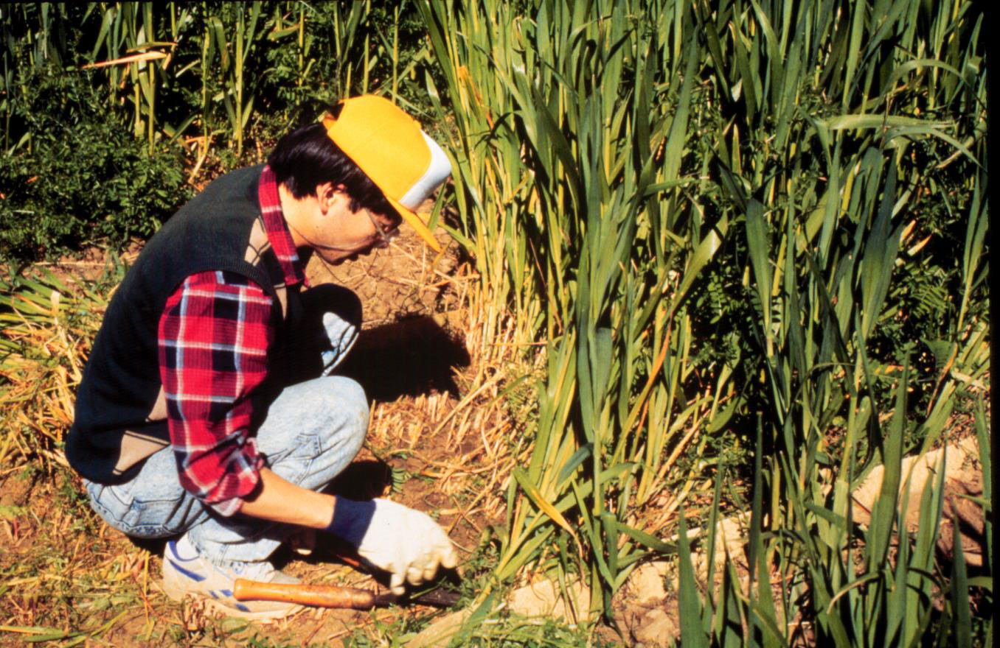
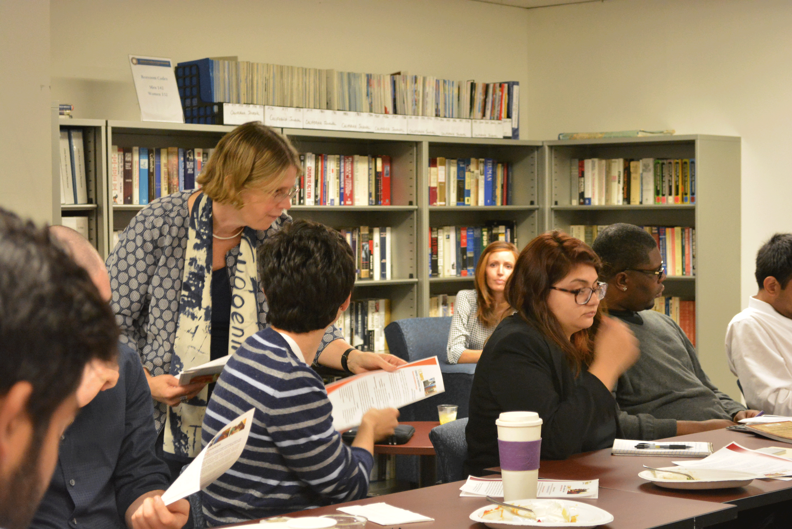

About
The Center for Regional Change and Rabobank have partnered to develop the Regional Opportunity Index (ROI), a new index of community and regional opportunity for understanding social and economic opportunity in California’s communities. The goal of the ROI is to help target resources and policies toward people and places with the greatest need, to foster thriving communities of opportunity for all Californians. It does this by incorporating both a "people" component and a "place" component, integrating economic, infrastructure, environmental, and social indicators in to a comprehensive assessment of the factors driving opportunity.
The Regional Opportunity Index was developed through a joint partnership between the UC Davis Center for Regional Change and Rabobank, N.A.


Who We Are
Why a Regional Opportunity Index?
Local communities throughout the state are both significant sources of wealth and places of concentrated poverty. Enabling California to thrive will require focused investment to build economic and social capacity. Effective investment decisions require rigorous information about need and opportunity across multiple domains, and the relationship between local neighborhoods and their surrounding region. Most current data and mapping tools are either organized at too large a geographic scale (e.g., counties) or fragmented on an issue-by-issue basis, limiting their utility. Enhancing efforts to benefit low and moderate-income households requires a next generation of data and mapping tools that provide finer-grained and holistic analyses of communities.
The ROI provide banks, policy makers, advocates and other key leaders with a powerful tool to identify communities with high levels of vulnerability and communities with characteristics that suggest social and economic opportunity. The ROI assesses key measures of community well-being, and how these patterns vary across different places.

CRC team members for the UC Davis Center for Regional Change/Rabobank Regional Opportunity Index include: Chris Benner, Jonathan London, Nancy Erbstein, Teri Greenfield, Cassie Hartzog, Sara Watterson, Mindy Romero, Diane Godard, Hyeyeong Choe and Nate Roth.
The CRC was also informed by the input of a peer review committee of leading scholars and practitioners with expertise in community development and opportunity mapping to advise the design process.
Contact Us